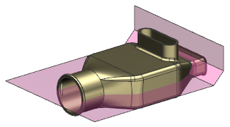

移除顶部
-
将底部组件设为显示部件。

-
使用修剪体命令来移除该部件的顶部，使用修剪片体作为工具面。

-
选择格式→引用集。
修剪片体与实体都是模型引用集的一部分，您需要将修剪片体从该引用集中移除，以使您不会再看到两个装配组件中的修剪片体。
-
在添加新的引用集列表框中，选择模型 (“MODEL”)。
-
按住 Shift 键然后选择修剪片体，以取消选择。

-
点击引用集对话框中的关闭。